split operation
Syntax
XYZ Split (Cartesian Space)
split(axis) { size1 : operations1 | size2 : operations2 | ... | sizen-1 : operationsn-1 }
split(axis) { size1 : operations1 | size2 : operations2 | ... | sizen-1 : operationsn-1 }*
split(axis, adjustMode) { size1 : operations1 | ... | sizen-1 : operationsn-1 }
split(axis, adjustMode) { size1 : operations1 | ... | sizen-1 : operationsn-1 }*
UV Split (Texture Space)
split(direction, surfaceParameterization, uvSet) { size1 : operations1 | ... | sizen-1 : operationsn-1 }*
Parameters
XYZ Split (Cartesian Space)
- axis (selector)
x, y, z Name of axis to split along. This is relative to the local coordinate system (i.e. the scope). - adjustMode
adjust, noAdjust Optional selector to control scope calculation of the calculated shapes: the default is to adjust the scope to the geometry's bounding box; noAdjust avoids this, therefore the scopes of the resulting shapes fill the parent's scope without gaps.
UV Split (Texture Space)
- direction (selector)
u, v Name of axis to split along. - surfaceParameterization (selector)
uvSpace Planar texture space, defined by the uv coordinates. unitSpace 2d space on the 3d geometry surface, measured in units (e.g. meters). - uvSet (float)
Number of texture a set/layer (integer number in [0,9]). The numbering corresponds to the texture layers of the material attribute.
See Texturing for information about the texture layer IDs.
General
- size (float)
Split width. Depending on the prefix, the widths along axis are interpreted in the following way:no prefix (absolute) The new shape will have exactly size size. ' (relative) The new shape's size will be size * current scope size.. ~ (floating) With the ~ prefix, the remaining spaces between the split parts with absolute dimensions are automatically adapted. If multiple floating parts are defined within a split, the dimensions are weighed proportionally. - operations
A sequence of shape operations to execute on the newly created shape. - *
Repeat switch: the repeat switch triggers the repetition of the defined split into the current shape's scope, as many times as possible. The number of repetitions and floating dimensions are adapted to the best solution (best number of repetitions and least stretching).
Description
XYZ Split (Cartesian Space)
The split operation subdivides the current shape along the specified scope axis into a set of smaller shapes. For each size-operation block inside the curly brackets, a new shape is pushed onto the shape stack, a number of shape operations is executed and the shape on top of the shape stack is popped again.
If the optional repeat switch * is appended to the split operation, the content of {...} is repeated as often as it fully fits into the scope's dimension along the selected axis.
The geometry of the current shape is cut with a plane perpendicular to the split axis at every intersection between two blocks (i.e. at size1, size2, ... sizen-1). Hollow meshes are closed after the cut, i.e. cutting planes introduce new surfaces to preserve the volume.
Splits can be nested, i.e. a size : operation block can be replaced by a {...} block. In theory, the nested level is unlimited.
UV Split (Texture Space)
Splits can also be applied in the 2d uv texture domain. Texture coordinates define a 2d parameter space on a 3d surface. Examples of such parameterizations are streets (u along thew street direction, v along the width) and facades (generated with setupProjection() and projectUV(), u along the width and v along the height). This permits to operate directly on the surface. In general, uv coordinates are in the [0,1] range and not connected to a unit like meters or yards on the surface (defined by the underlying mesh). Setting the split direction parameter to unitSpace permits to operate directly on the surface, i.e. work in units (e.g. meters or yards). Depending on the geometry and type of parameterization there is some inherent distortion in this conversion.
Borders (start, end) of the uv split are defined by the minimal and maximal values found in the selected uv coordinates. The genral syntax of the split is the same as in the cartesian case described above, i.e. relative and floating operators (' and ~) can be used as well as the repeat operator (*). Please check out the examples below.
Shape attributes
Each generated shape will have a number of attributes set:
- split.index: The zero-based index of the selected component.
- split.total: The total number of components selected by the selector.
Index and total are global; for instance
...
primitiveCube()
split(x) { '0.1 : A | '0.1 : B }*
will create 5 shapes with rule A interleaved with 5 shapes with rule B where split.index goes from 0 to 9 with all even numbers on rule A and all odd numbers on rule B while split.total will be 10.
For more information see split attribute.
Related
Examples
Setup
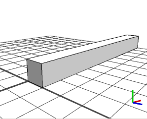 |
This is the initial shape before the split. We will present a number of split examples
along the x axis, the current shape's scope.sx is 10. Below are the rules used to color and size the shapes created in the split:
X(h)-->
s('1,'h,'1)
color("#0000ff")
Y(h)-->
s('1,'h,'1)
color("#ffff00")
Z(h)-->
s('1,'h,'1)
color("#00ff00")
|
Relative Sizes
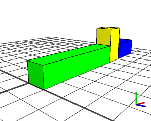 |
A-->
split(x){ '0.5 : Z |
'0.1 : Y(2) |
'0.2 : X(1) }
This example shows the usage of the relative prefix. The green Z shape takes half of the initial shape's size (5 units) and so on. The total sum of all shape sizes in x-direction is 8, therefore the gap at the end. |
Floating Sizes only: Ratios
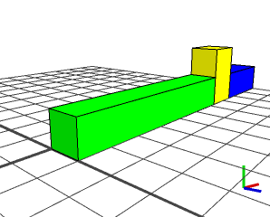 |
A-->
split(x){ ~0.5 : Z |
~0.1 : Y(2) |
~0.2 : X(1) }
The same example as above, but all sizes with the floating prefix. Note how the whole initial scope is filled (no gap at the end), and the ratios are kept. |
Absolute and Floating Sizes
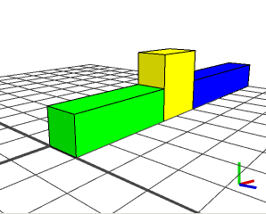 |
A-->
split(x){ 3.3 : Z(1) |
~3 : Y(2) |
5 : X(1) }
Here, a floating sized shape is framed between two absolute sized shapes. Its size is adjusted from 3 to 1.7 to fulfill the absolute constraints. |
Oversized
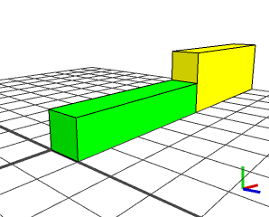 |
A-->
split(x){ '0.5 : Z(1) |
'0.6 : Y(2) |
3 : X(1) }
The first shape Z (green) fits in, but the second one Y (yellow) is cut at size 5. The X never gets created because there is no space left. |
Repeat Split with Absolute Sizes
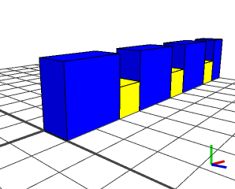 |
A-->
split(x){ 2 : X(2) |
1 : Y(1) }*
A repeat split example. All sizes are absolute. The XY pattern is repeated 3 times, and the remaining unit is filled with half a X, i.e. the geometry of the last X is cut off. |
Repeat Split with Floating Sizes
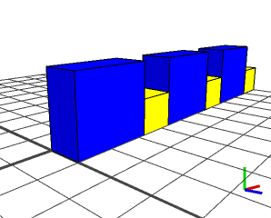 |
A-->
split(x){ ~2 : X(2) |
~1 : Y(1) }*
If floating sizes are used in the repeat split, no shape is cut but the sizes are adjusted such that the ratio between the elements is kept and the whole scope can be filled. |
Interleaved Repeat Split
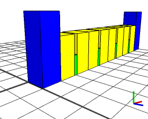 |
A-->
split(x){ 1 : X(3) |
{ ~1 : Y(2) |
0.2 : Z(1) |
~1 : Y(2) }* |
1 : X(3) }
|
Rhythm
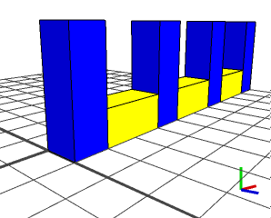 |
A-->
split(x){ { 1 : X(3) |
~2.7 : Y(1) }* |
1 : X(3) }
|
Cutting Geometry
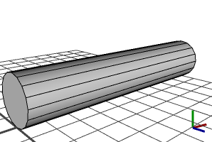 |
A-->
i("cylinder.hor.obj")
t(0,'0.5,0)
|
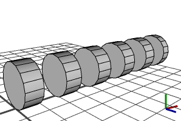 |
A-->
i("cylinder.hor.obj")
t(0,'0.5,0)
split(x) { { ~0.75 : XX | ~1 : NIL }* | ~0.5 : XX }
|
UV Split Basics
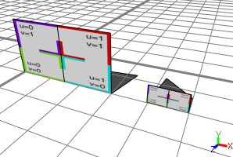 |
Init-->
extrude(scope.sx * 0.5)
comp(f) { front : Facade }
Facade-->
setupProjection(0, scope.xy, '1, '1)
projectUV(0)
texture("builtin:uvtest.png")
split(u, uvSpace, 0) { 0.5 : X }*
|
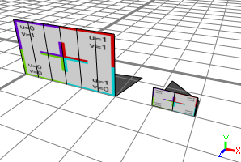 |
Init-->
extrude(scope.sx * 0.5)
comp(f) { front : Facade }
Facade-->
setupProjection(0, scope.xy, '1, '1)
projectUV(0)
texture("builtin:uvtest.png")
split(u, unitSpace, 0) { 5 : X }*
|
UV Split on Streets
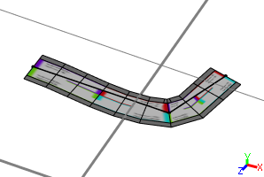 |
Street-->
texture("builtin:uvtest.png")
|
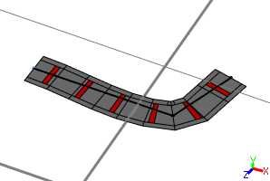 |
Street-->
split(u, unitSpace, 0) { ~10 : NIL | ~3 : color("#ff0000") X | ~10 : NIL}*
|
Copyright ©2008-2022 Esri R&D Center Zurich. All rights reserved.